Разработки
Учреждение образования
“Гомельский государственный университет
имени Франциска Скорины”
“Гомельский государственный университет
имени Франциска Скорины”
Подробнее о разработках
ЗОЛЬ-ГЕЛЬ ПОКРЫТИЯ И ПЛЁНКООБРАЗУЮЩИЕ РАСТВОРЫ НА ОСНОВЕ ДИОКСИДА КРЕМНИЯ ДЛЯ ПРИМЕНЕНИЯ В ТЕХНОЛОГИИ ПРОИЗВОДСТВА ИНТЕГРАЛЬНЫХ МИКРОСХЕМ
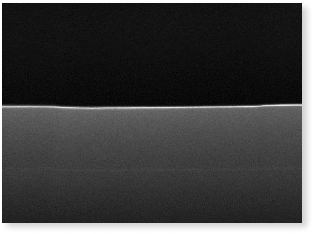
Предлагаются пленкообразующие растворы (золи) для формирования диэлектрических покрытий для планаризации поверхности и межслойной изоляции в технологии производства интегральных микросхем. Использование разработки позволит уменьшить зависимость от поставок импортных материалов и снизить затраты на производство интегральных микросхем и другой продукции более чем в 10-15 раз. Подробнее
ТЕРМОСТОЙКИЕ ДЕКОРАТИВНЫЕ УДАРОПРОЧНЫЕ ЗОЛЬ-ГЕЛЬ КЕРАМИЧЕСКИЕ ПОКРЫТИЯ ДЛЯ ЗАЩИТЫ ПОВЕРХНОСТИ ИЗ МЕТАЛЛОВ И СПЛАВОВ
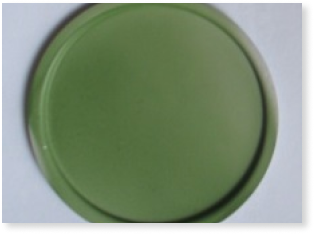
Для защиты поверхности изделий из алюминия для бытовых и промышленных применений. Могут применяться в лакокрасочной промышленности, производстве металлической посуды, производстве мебельной фурнитуры и др.Подробнее
КОНДЕНСАТОРНЫЕ SBT- И SBTN- ЗОЛЬ-ГЕЛЬ СЛОИ ДЛЯ ПРИМЕНЕНИЯ В ЭНЕРГОНЕЗАВИСИМЫХ РАДИАЦИОННО СТОЙКИХ ЗАПОМИНАЮЩИХ УСТРОЙСТВАХ
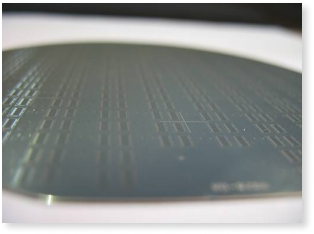
Для устройств энергонезависимой памяти FRAM, в качестве новой микроэлектронной и СВЧ-элементной базы, интеллектуальных сенсорных, управляющих и исполнительных микромодулей для промышленной и бытовой техники.Подробнее
ПРОСВЕТЛЯЮЩИЕ ЗОЛЬ-ГЕЛЬ ПОКРЫТИЯ НА ОСНОВЕ SiO2 С ГИДРОФОБНЫМИ СВОЙСТВАМИ
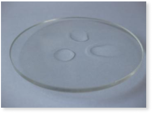
Для защиты металлических, стеклянных и других типов поверхностей разработаны защитные силикатные покрытия. Получаемая защитная плёнка прозрачная в видимом диапазоне, обладает гидрофобными свойствами, хорошо защищает металлические поверхности от внешнего воздействия окружающей среды, обладает высокой антикоррозионной стойкостью.Подробнее
ГИДРОФОБНЫЕ ТЕРМОСТОЙКИЕ ЗОЛЬ-ГЕЛЬ ПОКРЫТИЯ ДЛЯ ЗАЩИТЫ ПОВЕРХНОСТИ ИЗДЕЛИЙ ИЗ МРАМОРА И КЕРАМИКИ
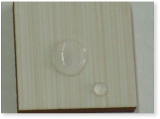
Могут применяться в производстве керамической плитки, защиты изделий из мрамора от агрессивного воздействия внешней среды и др. Представляет собой гидрофобные защитные золь-гель покрытия, обладающие ударопрочными, влагостокими и термостойкими свойствами.Подробнее
СИЛИКАТНЫЕ РАДИОЗАЩИТНЫЕ И РАДИОПОГЛОЩАЮЩИЕ МАТЕРИАЛЫ
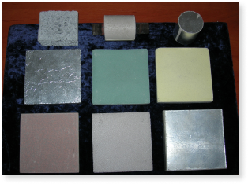
Силикатные радиозащитные материалы могут быть использованы в качестве первого слоя радиопоглотителей электромагнитного излучения, согласующего волновое сопротивление свободного пространства с параметрами экранирующей конструкции и снижающего уровень отражаемой энергии, а также для облицовки внутренних поверхностей камер, применяемых в радиобиологических исследованиях.Подробнее
ТЕПЛОИЗОЛЯЦИОННЫЙ МАТЕРИАЛ "ТИМ" НА ОСНОВЕ ДИОКСИДА КРЕМНИЯ
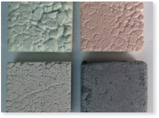
Материал обеспечивает повышение теплоизоляционных свойств ограждающих конструкций в 2-4 раза; биологически устойчив; не подвергается порче грызунами; в процессе эксплуатации не стареет, не подвергается деструкции; материал не горюч; для его производства используется распространенное сырье, вторичные продукты и отходы химических и других производств.Подробнее
ПЕНОСТЕКЛОКЕРАМИЧЕСКИЕ ТЕПЛОИЗОЛЯЦИОННЫЕ И РАДИОЗАЩИТНЫЕ МАТЕРИАЛЫ
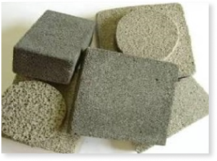
Пеностеклокерамические материалы получают по технологии, основанной на гидрохимической активации диоксида кремния и его механической и термической обработке. Исходными компонентами выступает сырье, содержащее более 80% диоксида кремния (отходы стекольной промышленности, аэросил, полезные ископаемые общего распространения) и силикаты щелочных металлов.Подробнее
АБРАЗИВНЫЙ ИНСТРУМЕНТ
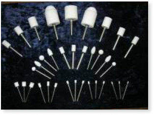
Используется для обработки внутренних отверстий и наружных труднодоступных поверхностей металлических и неметаллических материалов (резины, пробки, кожи, войлока, мягких горных пород и др.), которые не могут обрабатываться обычными кругами. Изготавливается с применением нового экологичного выгорающего порообразователя.Подробнее
ПОЛИРУЮЩИЕ СУСПЕНЗИИ ДЛЯ ПЕРВОЙ И ВТОРОЙ СТАДИИ ХИМИКО-МЕХАНИЧЕСКОЙ ПОЛИРОВКИ ПЛАСТИН МОНОКРИСТАЛЛИЧЕСКОГО КРЕМНИЯ
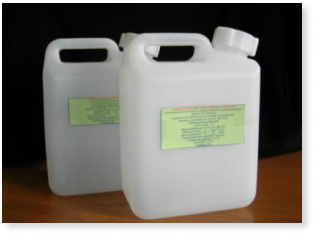
Предлагаются полирующие суспензии для первой и второй стадий химико-механической полировки кремниевых пластин различной ориентации, а также других применений. Обеспечивают высокую чистоту поверхности после полировки, малую величину возникающего статического электричества на полировальнике, высокую производительность, лёгкость использования, высокую стабильность и минимальное загрязнение ионами металлов.Подробнее
НИЗКОТЕМПЕРАТУРНАЯ ТЕХНОЛОГИЯ ПОЛУЧЕНИЯ МИКРОСФЕРИЧЕСКИХ ПОРОШКОВ
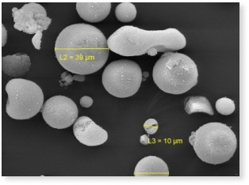
Разработана опытная установка для получения микропорошков с частицами, имеющими форму, близкую к сферической. Химический состав, температура обработки и почти правильная форма микросферических порошков обеспечивают их высокую прочность при сжатии, химическую и термическую стойкость. Регулируя температуру обработки, можно изменять плотность и водопоглощение получаемых микропорошков.Подробнее
НАНОСТРУКТУРНЫЕ SIO2/ZnO/Si ПЛЕНКИ ДЛЯ СОЛНЕЧНЫХ ЭЛЕМЕНТОВ
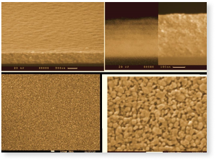
Золь-гель методом синтезированы прозрачные (пропускание свыше 95%) проводящие покрытия для солнечных элементов. Интеграция ZnO с Si может открыть возможности реального совмещения уникальных функциональных способностей этих материалов и кремниевой технологии, в частности, при производстве солнечных элементов.Подробнее
ДЕКОРАТИВНЫЕ ЗОЛЬ-ГЕЛЬ ПОКРЫТИЯ
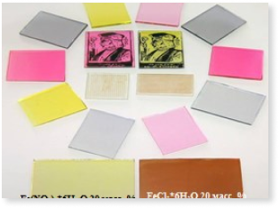
Предлагается модифицированный золь-гель метод для производства декоративных покрытий, легированных органическими красителями, оксидами Mn, Co, Fe, Ag, Cu, Ni, Ce, Eu и др. Может применяться в качестве декоративных золь-гель покрытий на стеклах, линзах, пластике и керамике.Подробнее
ЗОЛЬ-ГЕЛЬ ПОКРЫТИЯ НА ОСНОВЕ SiO2 ДЛЯ ЗАЩИТЫ ПОВЕРХНОСТИ МЕТАЛЛОВ
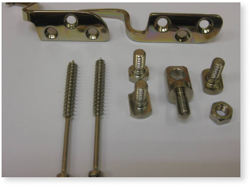
Предлагается модифицированный золь-гель метод для производства декоративных покрытий, легированных органическими красителями, оксидами Mn, Co, Fe, Ag, Cu, Ni, Ce, Eu и др. Может применяться в качестве декоративных золь-гель покрытий на стеклах, линзах, пластике и керамике.Подробнее
ЗОЛЬ-ГЕЛЬ ПОКРЫТИЯ C ГИДРОФОБНЫМИ СВОЙСТВАМИ НА ОСНОВЕ SiO2 ДЛЯ ЗАЩИТЫ И ПЛАНАРИЗАЦИИ ПОВЕРХНОСТИ РАЗЛИЧНЫХ ТИПОВ МАТЕРИАЛОВ
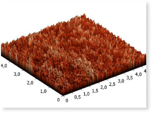
Представляют собой керамические SiO2 золь-гель покрытия, обладающие защитными, диэлектрическими, выравнивающими и термостойкими свойствами. Могут применяться в микроэлектронике в качестве межслойного диэлектрика для изоляции выхода р-n-перехода на поверхность кристалла полупроводникового материала; для защиты поверхности изделий из металлов и сплавов от воздействия внешней среды.Подробнее